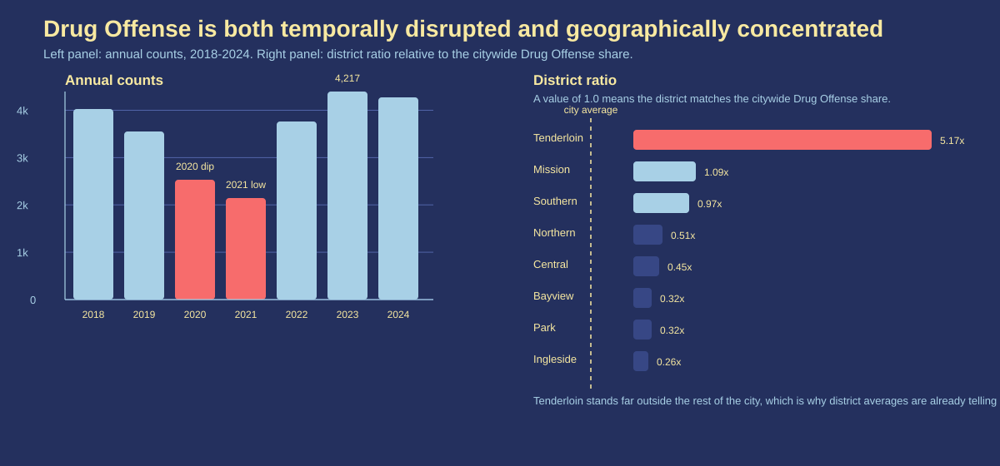

Dataset and framing
The dataset combines San Francisco Police Department incident reports that we cleaned during the course. Each row is a recorded police incident. That sounds straightforward, but for Drug Offense it matters a lot: this category depends heavily on where officers are present, what they see, and what they choose to record.
That makes Drug Offense a good category for storytelling, because the pattern is strong, but it also makes interpretation tricky. A high count does not automatically mean a neighborhood has more drug use than another one. It may also mean that enforcement is more concentrated there.
1. The category is both geographically extreme and sensitive to the COVID period
The first figure combines two facts that make Drug Offense hard to read as a simple citywide prevalence measure. On the left, the annual counts drop sharply in 2020 and stay low in 2021 before recovering later. That timing lines up with the COVID years, when mobility, street activity, and policing conditions all changed. The drop is real in the recorded data, but it does not tell us by itself whether drug use fell by the same amount.
On the right, the geography is even more striking. Tenderloin's Drug Offense ratio is more than five times the citywide average, while most other districts sit near or below the baseline. Even before looking at the map, the district view already says that this is not a citywide pattern with small local variation. It is a heavily concentrated one.

2. Its daily rhythm looks more like police activity than nightlife chaos
The second figure explains why I do not read Drug Offense as a simple "street crime at night" category. The upper heatmap shows that incidents peak from late morning into the afternoon, not after midnight. That is already unusual if the category were driven mainly by general nightlife opportunity.
The lower panel makes the story sharper by comparing Drug Offense with Warrant. In Assignment 1, this pair had the strongest weekly correlation I found (R2 = 0.927). Here the hourly curves almost sit on top of each other. That is exactly what I would expect if both categories are often created by the same police encounter: an officer stops someone, finds drugs, and also checks for outstanding warrants.
3. At street level, the map collapses into a Tenderloin-centered hotspot
The map pushes the same idea down to street scale. When I aggregate Drug Offense into hotspot cells, the strongest circles do not spread across the whole city. They collapse into a tight cluster around the Tenderloin and nearby downtown blocks. That matches the district pattern from Figure 1 but makes it much more concrete.
This is where outside context becomes useful. City reporting on open-air drug markets repeatedly points to the Tenderloin and South of Market as focus areas for enforcement and intervention. That does not prove a one-to-one causal story, but it does make the recorded hotspot map easier to interpret: the category is likely showing where visible drug markets and concentrated policing overlap.
What I take away from this
If I only looked at the label Drug Offense, I might be tempted to read it as a direct map of where San Francisco's drug problem is worst. After looking at these three figures, that reading feels too naive. The safer interpretation is that this category measures a very specific public-facing slice of the problem: places and times where drug activity becomes visible to police and gets converted into an incident record.
That is why the Tenderloin result is interesting without being the whole truth. The data does not show every form of drug use, and it certainly does not justify a simple claim like "Tenderloin has five times more drug use than the rest of the city." What it does show, much more clearly, is where Drug Offense gets recorded, when it gets recorded, and why that recording process needs to stay part of the story.
Sources
- San Francisco Police Department incident reports, combined 2003-present course dataset.
- Rashida Richardson, Jason Schultz, and Kate Crawford, Dirty Data, Bad Predictions.
- SF.gov, Three-Month Update on Operation to Dismantle Open-Air Drug Markets.